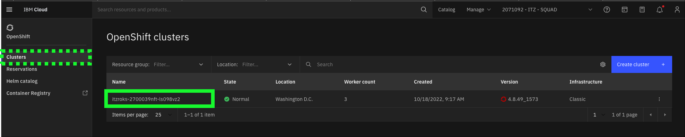
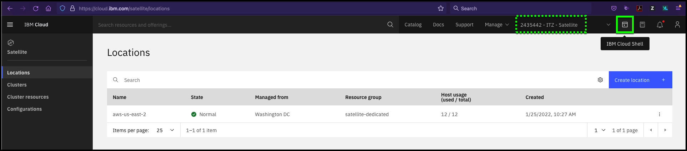

Environment Preparation and B2Bi Installation using IBM Cloud Shell
This demonstration guide assumes a Custom ROKS environment provisioned from IBM Technology Zone (ITZ) here.
At this point, all users should have completed the steps in the IBM Sterling Data Exchange Level 3 learning plan to reserve the Red Hat OpenShift on IBM Cloud environment as described in the IBM Sterling Data Exchange Level 3 Introduction video. Before proceeding, validate that the reservation has been fully provisioned and is in the Ready state in ITZ. If not, please complete those steps before proceeding.

The following steps must be performed before delivering the demonstration. These steps should be performed well in advance of starting an actual client demonstration as it will take approximately 90 minutes for all steps to complete.
Accept invitation to join the ITZ IBM Cloud account for the Custom ROKS reservation
- Open the You are invited to join an account in IBM Cloud email received from IBM Cloud and click the Join now link.
- In the browser window that opens, click the Join Account button.

Follow the steps to login to IBM Cloud.
- On the IBM Cloud Dashboard set the current account to 2112072 - ITZ - V2.

Not seeing 2112072 - ITZ - V2?
It is possible ITZ provisioned the OpenShift cluster in a different IBM Cloud account. Select the account specified in the ITZ reservation.

Access the OpenShift web console
- Click the OpenShift icon in the left-hand menu bar.

- Click Clusters.

- Click the OpenShift cluster name in the table.

Note: the cluster name will be different than seen in the above image.
- Click the OpenShift web console button.

At this time, a page like the one below should open in a new browser window or tab.

Leave this browser window open. It will be used again later.
Retrieve the B2Bi installation scripts
In this part of the demonstration, you will use the IBM Cloud Shell. If you are not familiar with IBM Cloud Shell, you can learn about it here.
Warning
It is critical all steps in this section be completed in a single instance of IBM Cloud Shell. If the shell becomes inactive for more than 20 minutes, it will be closed. Additionally, local files will not persist after 2 hours of inactivity. In this section, files are downloaded, modified, and long running commands are executed. Please allot approximately 90 continuous minutes to complete this section of the demonstration script. Note, the last step is a long running (~60 minutes) automated script. Once started, keep the Cloud Shell browser window/tab open and allow the process to complete. No further user interaction will be required once it is started. Not completing this section in a single instance of IBM Cloud Shell will leave the B2Bi deployment to OpenShift in an inconsistent state. A new ITZ environment will need to be provisioned and this section will need to be re-executed.
Tip
Use the copy capability of the demonstration guide to copy and paste commands to the IBM Cloud Command Shell to avoid typing errors.
- In the IBM Cloud Portal, with the demonstration account selected (2112072 - ITZ - V2), click the IBM Cloud Shell icon.

The IBM Cloud Shell will open in a new browser tab or window. It may take a few seconds for the shell to initialize.

- Create a new directory for the B2Bi installation scripts.
- Set the PROJECT_DIR environment variable.
- Change directories to PROJECT_DIR.
- Download the B2Bi installation script.
wget -O rapid-lab-b2bi-newdb-61051-CloudShell.zip https://github.com/IBM/SalesEnablement-SterlingDataExchange-L3/blob/main/tools/rapid-lab-b2bi-newdb-61051-CloudShell.zip?raw=true
Example output
--2022-10-18 20:12:56-- https://github.com/IBM/SalesEnablement-SterlingDataExchange-L3/blob/main/tools/rapid-lab-b2bi-newdb-61051.zip?raw=true
Resolving github.com (github.com)... 140.82.113.4
Connecting to github.com (github.com)|140.82.113.4|:443... connected.
HTTP request sent, awaiting response... 302 Found
Location: https://github.com/IBM/SalesEnablement-SterlingDataExchange-L3/raw/main/tools/rapid-lab-b2bi-newdb-61051.zip [following]
--2022-10-18 20:12:56-- https://github.com/IBM/SalesEnablement-SterlingDataExchange-L3/raw/main/tools/rapid-lab-b2bi-newdb-61051.zip
Reusing existing connection to github.com:443.
HTTP request sent, awaiting response... 302 Found
Location: https://raw.githubusercontent.com/IBM/SalesEnablement-SterlingDataExchange-L3/main/tools/rapid-lab-b2bi-newdb-61051.zip [following]
--2022-10-18 20:12:57-- https://raw.githubusercontent.com/IBM/SalesEnablement-SterlingDataExchange-L3/main/tools/rapid-lab-b2bi-newdb-61051.zip
Resolving raw.githubusercontent.com (raw.githubusercontent.com)... 185.199.110.133, 185.199.111.133, 185.199.108.133, ...
Connecting to raw.githubusercontent.com (raw.githubusercontent.com)|185.199.110.133|:443... connected.
HTTP request sent, awaiting response... 200 OK
Length: 4061226 (3.9M) [application/zip]
Saving to: ‘rapid-lab-b2bi-newlab-61051.zip’
rapid-lab-b2bi-newlab-61051.zip 100%[=========================================================================================================================================>] 3.87M --.-KB/s in 0.03s
2022-10-18 20:12:57 (147 MB/s) - ‘rapid-lab-b2bi-newlab-61051.zip’ saved [4061226/4061226]
- Unzip the installation script.
Example output
Archive: rapid-lab-b2bi-newdb-61051-CloudShell.zip
inflating: deploy_mq.sh
inflating: edited-values.yaml
inflating: prepare_db2.sh
inflating: deploy_db2.sh
inflating: README.md
inflating: COPYING
inflating: env.sh
inflating: deploy_b2bi.sh
inflating: db2jcc4.jar
Authenticate to the OpenShift cluster
For the next steps, the OpenShift login command to authenticate to the OpenShift cluster must be retrieved and executed.
- Switch to the OpenShift web console browser window or tab.
- Click the IAM identity drop-down menu at top right of the OpenShift web console and click the Copy login command option.

- Click the Display Token link.

- Copy the string in the Log in with this token field.

- Switch back to the IBM Cloud Shell browser window or tab from earlier.
- Paste the oc login command line copied in step 17 into the IBM Cloud Shell window and press enter.
Example output
itzuser@itz-2700039nft-srv4:~/b2bi$ oc login --token=sha256~XXXXXXXXXXXXXXXXXX --server=https://c103-e.us-south.containers.cloud.ibm.com:31501
Logged into "https://c103-e.us-south.containers.cloud.ibm.com:31501" as "IAM#andrew@jones-tx.com" using the token provided.
You have access to 66 projects, the list has been suppressed. You can list all projects with 'oc projects'
Using project "default".
Welcome! See 'oc help' to get started.
itzuser@itz-2700039nft-srv4:~/b2bi$
Install Db2 in the OpenShift cluster
- Run the environment setup and Db2 deploy scripts.
Example output
Now using project "db2" on server "https://c109-e.us-east.containers.cloud.ibm.com:30720".
You can add applications to this project with the 'new-app' command. For example, try:
oc new-app rails-postgresql-example
to build a new example application in Ruby. Or use kubectl to deploy a simple Kubernetes application:
kubectl create deployment hello-node --image=k8s.gcr.io/e2e-test-images/agnhost:2.33 -- /agnhost serve-hostname
serviceaccount/db2 created clusterrole.rbac.authorization.k8s.io/system:openshift:scc:privileged added: "db2" secret/db2-secret created service/db2-ci created service/db2-lb created statefulset.apps/db2 created
Wait 5 minutes...
Wait approximately 5 minutes for the Db2 containers to start loading in OpenShift before executing the next step.
Optional: monitor events in OpenShift web console
Use the OpenShift web console to monitor the Db2 project events and pod creation.

- Verify Db2 is up and running in the OpenShift cluster.
Failure
If no output is seen from the above command, or if it returns the following message:
Error from server (BadRequest): container "db2" in pod "db2-0" is waiting to start: ContainerCreating
wait and rerun oc logs -f ${DB2_NAME}-0 until the output starts steaming as shown in the example output below.
Example output
(*) Previous setup has not been detected. Creating the users...
(*) Creating users ...
(*) Creating instance ...
DB2 installation is being initialized.
Total number of tasks to be performed: 4 Total estimated time for all tasks to be performed: 309 second(s)
Task #1 start Description: Setting default global profile registry variables Task #1 end
Task #2 start Description: Initializing instance list Estimated time 5 second(s) Task #2 end
Task #3 start Description: Configuring DB2 instances Estimated time 300 second(s) Task #3 end
Task #4 start Description: Updating global profile registry Estimated time 3 second(s) Task #4 end
...
**Long output - truncated in this example**
...
2022-10-18-16.44.43.180954+000 I33681E386 LEVEL: Warning PID : 15858 TID : 139996146354048 PROC : db2start
INSTANCE: db2inst1 NODE : 000
HOSTNAME: db2-0
FUNCTION: DB2 UDB, base sys utilities, sqleReleaseStStLockFile, probe:16078
MESSAGE : Released lock on the file:
DATA #1 : String, 50 bytes
/database/config/db2inst1/sqllib/ctrl/db2strst.lck
Do not proceed until...
Do not proceed to the next step until the following line appears in the output:
/database/config/db2inst1/sqllib/ctrl/db2strst.lck
- Stop the oc logs command by entering Ctrl+c on the keyboard.
Example output
... FUNCTION: DB2 UDB, base sys utilities, sqleReleaseStStLockFile, probe:16078
MESSAGE : Released lock on the file:
DATA #1 : String, 50 bytes
/database/config/db2inst1/sqllib/ctrl/db2strst.lck
^C
itzuser@itz-2700039nft-srv4:~/b2bi$
Configure Db2 and create the required B2Bi tables
- Prepare the Db2 instance running in OpenShift.
This script does not generate output.
- Remotely connect to the Db2 container running in OpenShift.
Example output
Last login: Tue Oct 18 20:47:33 UTC 2022
[db2inst1@db2-0 ~]$
A remote connection is now open to the Db2 container running in OpenShift as shown by the change in the command prompt to: [db2inst1@db2-0 ~]$
- Run the db2reg.sh script.
Example output
DB20000I The UPDATE DATABASE MANAGER CONFIGURATION command completed successfully.
DB20000I The UPDATE DATABASE MANAGER CONFIGURATION command completed successfully.
DB20000I The UPDATE DATABASE MANAGER CONFIGURATION command completed successfully.
DB20000I The UPDATE DATABASE MANAGER CONFIGURATION command completed successfully.
DB20000I The UPDATE DATABASE MANAGER CONFIGURATION command completed successfully.
DB20000I The UPDATE DATABASE MANAGER CONFIGURATION command completed successfully.
DB20000I The UPDATE DATABASE MANAGER CONFIGURATION command completed successfully.
DB20000I The UPDATE DATABASE MANAGER CONFIGURATION command completed successfully.
- Create the B2Bi tables in Db2.
This will take ~5 minutes
This command will take approximately 5 minutes to complete.
Example output
CREATE DATABASE B2BIDB AUTOMATIC STORAGE YES USING CODESET UTF-8 TERRITORY US COLLATE USING IDENTITY PAGESIZE 4096 DFT_EXTENT_SZ 32
DB20000I The CREATE DATABASE command completed successfully.
CONNECT TO B2BIDB
Database Connection Information
Database server = DB2/LINUXX8664 11.5.5.1 SQL authorization ID = DB2INST1 Local database alias = B2BIDB
UPDATE DATABASE CONFIG USING STMT_CONC LITERALS
DB20000I The UPDATE DATABASE CONFIGURATION command completed successfully.
... Long output - truncated in this example ...
CREATE USER TEMPORARY TABLESPACE UTEMP4KTS IN DATABASE PARTITION GROUP IBMDEFAULTGROUP PAGESIZE 4 K MANAGED BY AUTOMATIC STORAGE EXTENTSIZE 32 BUFFERPOOL UTEMP4KBP FILE SYSTEM CACHING
DB20000I The SQL command completed successfully.
CONNECT RESET
DB20000I The SQL command completed successfully.
- Run the final Db2 update script.
Example output
Database Connection Information
Database server = DB2/LINUXX8664 11.5.5.1 SQL authorization ID = DB2INST1 Local database alias = B2BIDB
DB20000I The SQL command completed successfully. DB20000I The TERMINATE command completed successfully. DB20000I The FORCE APPLICATION command completed successfully. DB21024I This command is asynchronous and may not be effective immediately.
DB20000I The DEACTIVATE DATABASE command completed successfully.
10/18/2022 16:53:39 0 0 SQL1064N DB2STOP processing was successful.
SQL1064N DB2STOP processing was successful.
10/18/2022 16:53:41 0 0 SQL1063N DB2START processing was successful.
SQL1063N DB2START processing was successful.
- Exit the connection to the Db2 container in OpenShift.
Example output
logout itzuser@itz-2700039nft-srv4:~/b2bi$
Notice the command line prompt has changed back to the prompt for IBM Cloud Shell.
Install MQ in the OpenShift cluster
- Deploy MQ to OpenShift.
Example output
Now using project "mq" on server "https://c109-e.us-east.containers.cloud.ibm.com:30720".
You can add applications to this project with the 'new-app' command. For example, try:
oc new-app rails-postgresql-example
to build a new example application in Ruby. Or use kubectl to deploy a simple Kubernetes application:
kubectl create deployment hello-node --image=k8s.gcr.io/e2e-test-images/agnhost:2.33 -- /agnhost serve-hostname
serviceaccount/mq created clusterrole.rbac.authorization.k8s.io/system:openshift:scc:privileged added: "mq" service/mq-data created service/mq-web created
W1018 16:54:39.757566 34060 shim_kubectl.go:58] Using non-groupfied API resources is deprecated and will be removed in a future release, update apiVersion to "route.openshift.io/v1" for your resource
route.route.openshift.io/mq-web created
secret/mq-secret created
statefulset.apps/mq created
Update the environment variables with IBM container entitlement key and e-mail address
The next steps require editing of a file using the vi editor. If you are not familiar with the vi editor, it is strongly recommend to watch the following video before proceeding. There is no audio for this video.
- Open the vi editor.
- Open the IBM Entitlement key page here.
Note, re-authentication to ibm.com may be required.
- If an entitlement key does not already exist, click Add new key.

- Click the Copy button.

- Return to the IBM Cloud Shell window, use the arrow keys to move the cursor between the quotes in the export APIKEY line, press i to enter input mode, and paste the copied entitlement key between the quotes.
- Press the esc key to exit input mode.
- Arrow key down and over to between the quotes in the export EMAIL="" line and enter a your e-mail address.
- Press the esc key to exit input mode.
- Move cursor between the quotes on the export EMAIL="" line, press i to enter input mode, and enter your e-mail address.
- Press the : key and then the x key and enter to save and exit the vi editor.
- Verify the env.sh file looks like the example output below.
Example output
itzuser@itz-2700039nft-srv4:~/b2bi$ cat env.sh
#!/usr/bin/bash
## Locate your APIKEY (Entitlement Key For Container Software)
## here: https://myibm.ibm.com/products-services/containerlibrary
## Requires IBM ID and permission.
export PROJECT_NAME="b2bi"
export PROJECT_DIR="$HOME/b2bi"
export DB2_NAME="db2"
export MQ_NAME="mq"
export APIKEY="XXXXXXXXXXXXXXXXXXXXXXXXXXXXXXXXXXXXXXXXXXXXXXXXXXXXXX"
export EMAIL="andrew@jones-tx.com"
itzuser@itz-2700039nft-srv4:~/b2bi$
Install B2Bi in the OpenShift cluster
- Deploy the B2Bi related containers on OpenShift.
This will take approximately 10 minutes
This command will take approximately 10 minutes to complete.
Optional: monitor events in the OpenShift web console
Use the OpenShift web console to monitor the b2bi project events and pod creation.


Example output
Now using project "b2bi" on server "https://c103-e.us-south.containers.cloud.ibm.com:31501".
You can add applications to this project with the 'new-app' command. For example, try:
oc new-app rails-postgresql-example
to build a new example application in Ruby. Or use kubectl to deploy a simple Kubernetes application:
kubectl create deployment hello-node --image=k8s.gcr.io/e2e-test-images/agnhost:2.33 -- /agnhost serve-hostname
persistentvolumeclaim/ibm-cloud-file-nfs-storage-pvc created clusterrole.rbac.authorization.k8s.io/system:openshift:scc:anyuid added: "default" deployment.apps/ibm-cloud-file-nfs-storage-pod created Defaulted container "ibm-cloud-file-nfs-storage-pod" out of: ibm-cloud-file-nfs-storage-pod, permissionsfix (init)
... Long output - truncated in this example ...
- Set environment variables for final install step.
export DB2_IP=$(oc get svc db2-ci -n ${DB2_NAME} -o jsonpath='{.spec.clusterIP}')
export MQ_IP=$(oc get svc mq-data -n ${MQ_NAME} -o jsonpath='{.spec.clusterIP}')
export INGRESS_SUBDOMAIN=$(oc get IngressController default -n openshift-ingress-operator -o jsonpath='{.status.domain}')
- Finalize the B2Bi install Yet Another Markup Language (YAML) file.
- Run the helm chart to install the B2Bi containers in OpenShift.
helm install sterling-fg $PROJECT_DIR/ibm-b2bi-prod --timeout 120m0s --namespace ${PROJECT_NAME} --values b2biInstall.yaml --debug
This will take approximately 60 minutes
This command will take approximately 60 minutes to complete.
Learn an interesting detail about IBM Cloud Shell while you wait...
IBM Cloud Shell is a very useful tool when working with IBM Cloud command line interfaces as well as other Cloud-related tools like Red Hat OpenShift, kubernetes, helm, etc. as many of these tools are preinstalled and alleviate the need to install tools on personal workstations. However, IBM Cloud Shell has some limitations that you can read about here.
One additional limitation not listed in the above doc is that IBM Cloud Shell will kill long running processes running in scripts (e.g. bash scripts). This issue was encountered while creating these installation scripts. Originally, steps 37 through 39 above were contained in the deploy_b2bi.sh script. However, when executed, the deploy_b2bi.sh script would get killed (which in turn killed helm) after running approximately 20 minutes. By pulling the helm command out of the script and running it directly in the initial shell process, helm is able to complete the install of the B2Bi containers.
Example output
... Long output - truncated in this example ...
NAME: sterling-fg
LAST DEPLOYED: Wed Oct 19 17:11:30 2022
NAMESPACE: b2bi
STATUS: deployed
REVISION: 1
NOTES:
Please wait while the application is getting deployed.
-
Run the below command to check the status of application server replica sets. At least 1 replica must be in 'READY' state.
kubectl get replicasets -l release=sterling-fg -n b2bi
-
Run the below command to check the status of the application server pods for the release.
kubectl get pods -l release=sterling-fg -n b2bi -o wide
To view the logs for a pod, run the below command.
kubectl logs <pod name> -n b2bi
- Access the application by running the following url
Do not close the IBM Cloud Shell browser window/tab until the command completes. Once the command successfully completes, the IBM Cloud Shell can be closed (type exit at the command prompt or simply close the browser window/tab).
That concludes the setup of the environment. Proceed to the next part of the demonstration guide to configure B2Bi.